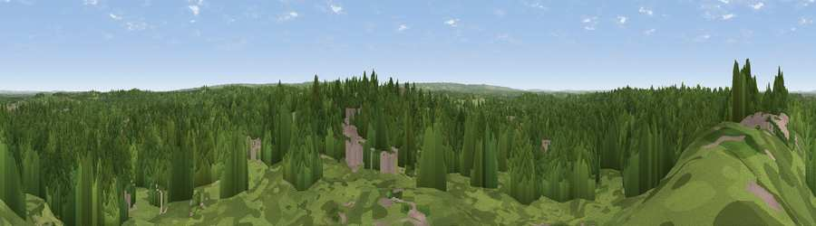

Viewpoint near Oxshott
#32777 in England · top 34% of its area beats it · near OxshottThe view, rendered

A 360° render of this exact spot computed from the terrain model, tree cover and land cover — summer colours, afternoon light, calibrated against photographs of famous viewpoints. Real trees, hedges and buildings will differ in detail.
The panorama
Grey silhouette: terrain skyline in each direction (720 bearings, Earth curvature and refraction included). Dashed green: skyline with trees (+15 m) and buildings (+8 m) as obstacles. Blue strip: how far the ground is visible on each bearing.
Where the view opens
Wedge length = distance to the farthest visible ground on that bearing (vegetation-aware). Rings at 10, 25 and 50 km.
What fills the view
81% woodland · 10% built-up · 9% grassland
Angular shares of the visible panorama (visual magnitude), not map area. Landscape diversity 0.28 (0–1 Shannon).
Key numbers
More beautiful places nearby
The staircase of upgrades: each row has a higher view potential than everything closer. Driving times are estimates from straight-line distance, calibrated against real road routing — check an actual route before setting out.
| Place | Direction | Drive | Score |
|---|---|---|---|
| Viewpoint near Oxshott | ESE · 2 km | ~6 min | 50.5 |
| Box Hill Viewpoint | SSE · 10 km | ~20 min | 55.7 |
| Viewpoint near Dorking | S · 10 km | ~20 min | 55.9 |
| Viewpoint near Box Hill Village | SSE · 11 km | ~21 min | 68.1 |
| Box Hill | SSE · 11 km | ~21 min | 70.4 |
| Viewpoint near Box Hill Village | SSE · 11 km | ~21 min | 71.0 |
| Viewpoint near Coldharbour | S · 17 km | ~30 min | 71.3 |
| Viewpoint near Fernhurst | SW · 39 km | ~58 min | 75.1 |
51.33455, -0.35814 · source: screening · position refined by local search. Computed location — check access rights before visiting.